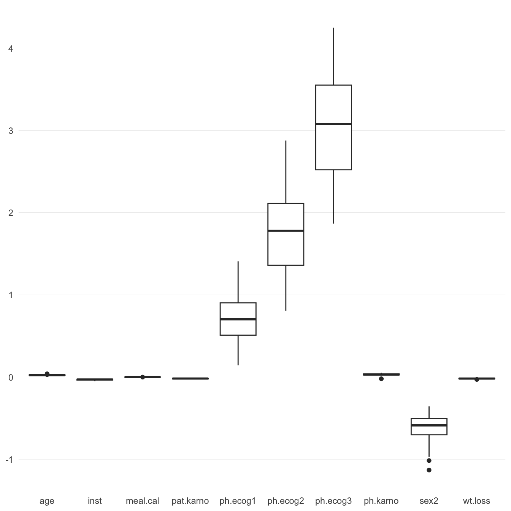
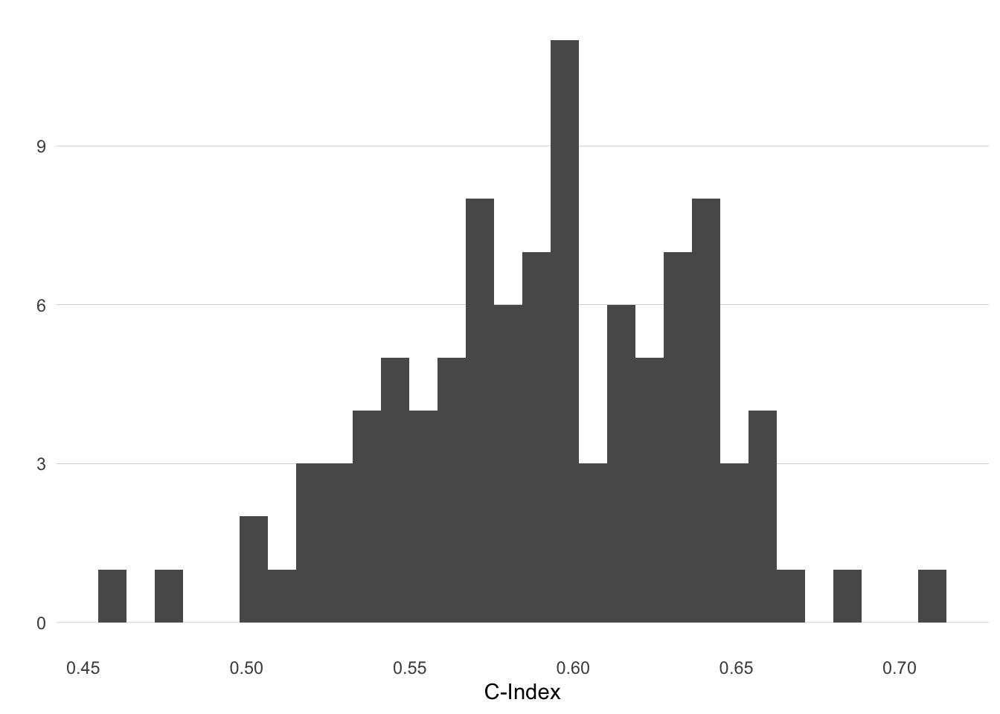

Simulating the effect of data-splitting and stepwise selection on the lung dataset
code
r
statistics
model fitting
model validation
Author
Paul Smith
Published
March 5, 2025
This is Part Two of an \(N\)1 part series on model fitting and validation. Part One can be found here.
1 where \(N\) is TBC
Introduction
The aim of this article is to consider the effect of using data-splitting (to obtain a single training and test set) and stepwise selection (to obtain ‘significant’ factors) on the lung R dataset.
In general – assuming we have data \(X \in \mathbb{R}^{n \times p}\) – the process consists of the following steps:
Randomly allocate the data to a training set, \(X_\text{train} \in \mathbb{R}^{n_1 \times p}\), and a test set, \(X_\text{test} \in \mathbb{R}^{n_2 \times p}\).
Here, \(n = n_1 + n_2\), where \(n_1 \approx 0.7 n\) and \(n_2 \approx 0.3 n\).
Perform model building on the test set, using stepwise selection starting with a model that includes all factors, to obtain model \(\mathcal{M}\).
Stepwise is performed by adding and removing a single factor at each step such that AIC is minimised. Here, \(\text{AIC} = 2k - 2 \log(\hat L)\), and \(\hat L\) is the maximised (partial) likelihood.
Perform model validation on the test set, to obtain Harrell’s C-index, assessing the predictive performance of the model over all observed times.
We are answering the question: Among all pairs of individuals, what fraction had predicted risks that were correctly ranked in the same order as their actual observed outcomes (event times)?
There are many issues with this procedure, which I have discussed in a previous post. In this article I will perform the above steps 100 times and obtain the following:
The amount of variability in the factors chosen in the model selection stage.
In addition, the variability in the coefficients estimated for each factor.
The amount of variability in the c-statistic obtained from validation on the test set.
Prerequisites and data cleaning
The lung dataset is from the {survival} package (Therneau 2024), and I will use {data.table}(Barrett et al. 2024) as I like the syntax and it’s fast.
Barrett, Tyson, Matt Dowle, Arun Srinivasan, Jan Gorecki, Michael Chirico, Toby Hocking, and Benjamin Schwendinger. 2024. Data.table: Extension of ‘Data.frame‘. https://CRAN.R-project.org/package=data.table.
library(survival)library(broom) # for 'tidy'library(data.table)options(datatable.print.nrows =20) # set max # rows before truncating (default = 100)library(ggplot2)lung <-as.data.table(lung)lung
The lung dataset has status encoded in a non-standard way (as 1 for censored and 2 for dead). I will change this to 0 and 1 respectively. I will also ensure the data contains no missingness by using na.omit().
#recode 'status' as 1 if event and 0 if censoredlung_recode <-copy(lung)[, status :=as.integer(status ==2)]# remove NA's (st 'ampute' works)lung_complete <-na.omit(lung_recode)lung_complete[, `:=`(sex =as.factor(sex), ph.ecog =as.factor(ph.ecog))]lung_complete
Randomly allocate \(\approx 70\%\) of the data to the training set, and the remainder to the test set.
Use stepwise selection to choose ‘significant’ factors and estimate coefficients.
Obtain the C-index on the test set.
For reproducibility, I’ll create a data.table where the rows consist of an .id variable – relating to the simulation number – and the row indices which will be chosen from lung_complete to make a training set for that simulation. This is shown in Listing 1.
set.seed(1000)n_x <-nrow(lung_complete)n1 <-0.7# size of training settraining_idx <-rbindlist(lapply(seq_len(n_sim), function(i) { idx <-sample(1:n_x, floor(n1 * n_x))data.frame(.id = i, as.list(idx)) } ),use.names =FALSE )# change column names except '.id'old_names <-names(training_idx)new_names <-c(".id", paste0("idx_", seq_len(ncol(training_idx) -1))) setnames(training_idx, old = old_names, new = new_names)training_idx[1:5, 1:12]
Listing 1: Generating training set indices for data-splitting simulations
Now, I’ll build 100 Cox proportional hazard models, using a stepwise procedure, on each training sample, and obtain the C-index on the respective test sample.
# split data into training and test sets# and obtain cox coefsmodels <- training_idx[, { tmp_train <- lung_complete[unlist(.SD)] tmp_test <- lung_complete[-unlist(.SD)]# fit the full model to the training data cox_full_tmp <-coxph(Surv(time, status) ~ .,data = tmp_train)# use stepwise selection on training data cox_step_tmp <-step(cox_full_tmp,direction ="both",trace =0)# get linear predictor on test data lp_tmp <-predict(cox_step_tmp, newdata = tmp_test, type ="lp")# obtain c-statistic using linear predictor c_stat <-concordance(Surv(tmp_test$time, tmp_test$status) ~ lp_tmp)data.table(as.data.table(tidy(cox_step_tmp)),c = c_stat$concordance) }, by = .id] models
Listing 2: Fitting Cox PH models on the training samples, and obtaining the C-index on the respective test samples
The models output from Listing 2 has 7 columns. The .id variable refers back to the training sample obtained from training_idx in Listing 1, and the term variable gives the factors that have been selected in the model relating to the .id.2 The c variable is the C-index obtained from using the .id\(^{\text{th}}\) model to predict the test set events, so is identical for rows with the same .id’s.
2 The term estimates can contain NA’s if there is complete separation or zero events in the split.
Using the linear predictor to access predictive ability
The hazard ratio between two individuals is determined by the difference in their linear predictors. A higher linear predictor implies a higher hazard (i.e., worse prognosis, or shorter survival on average).
Why the LP Is Enough to Rank Subjects
Harrell’s c-index is fundamentally about whether the model places the higher risk on the patient who actually experiences the event earlier.
In a Cox model, risk is monotonic in \(\exp(\text{LP})\). That is, if \(\text{LP}_A > \text{LP}_B\), then \(\exp(\text{LP}_A) > \exp(\text{LP}_B)\).
So for pairwise comparisons, we only need to compare the linear predictor \(\text{LP}_A\) vs. \(\text{LP}_B\).
If \(\text{LP}_A > \text{LP}_B\) but patient A actually survived longer, that pair is discordant. If A also died sooner, that pair is concordant.
Analysing the results
Using the models and coefficient estimates obtained in models (from Listing 2), I’ll look at a few things:
How often each factor is chosen – using the stepwise procedure – to be in the 100 models.
How many different models are chosen from the 100 stepwise selection procedures, and the proportion of times each model is selected.
The variability in the estimated factor coefficients (if there are chosen in the model).
The variability in the C-index obtained on the test set.
The model factors
First, let’s look at the proportion that each factor has been chosen to be in the 100 models.
which_variables <- models[, unique(term)]proportion_variables <-rbindlist(lapply(1:length(which_variables), function(i) { prop_tmp <-nrow(models[term == which_variables[i]]) / n_simdata.table(which_variables[i], prop_tmp) } ) )# categorical factors in each model are present in the `models` dataset multiple times# e.g. 'ph.ecog1', 'ph.ecog2', etc.# create a "expl_factor" group by removing trailing digitsproportion_variables[ , expl_factor :=sub("[0-9]+$", "", V1)]# collapse by the explanatory factorgrouped_proportions <- proportion_variables[ , .(prop =unique(prop_tmp)), by = expl_factor]grouped_proportions[order(prop, decreasing =TRUE)]
Listing 3: Obtaining the proportion that each factor is chosen to be in the models.
Now I’ll consider each model and the factors obtained using the stepwise procedure. First – in Listing 4 – I’ll create a terms_string variable that gives a string containing all the terms in each of the 100 models. Then – in Listing 5 – I’ll group these models together to see how many different combination of factors have been chosen from the 100 stepwise selection procedures.
That is, from 100 simulations of splitting the data into a training and test set, I’ve obtained 34 different models!
The factor coefficients
OK – let’s look at the variability of the coefficient estimates for each factor. First, I’ll get summary statistics for each factor coefficient. A box-plot showing this variability is given in Figure 1, and the kernel densities of the estimates are shown in Figure 2.
# Remove any rows that have NA in the estimatemodels_clean <-subset(models, !is.na(estimate))models_clean[, as.list(summary(estimate)), by = term]
ggplot(models_clean, aes(x=term, y=estimate)) +geom_boxplot() +theme_minimal() +theme(axis.title =element_blank(),# remove the grid linespanel.grid.major =element_blank() ,panel.grid.minor =element_blank() ,# explicitly set the horizontal lines panel.grid.major.y =element_line(linewidth = .1, color ="grey" ) )

Figure 1: Box plots showing the variability in the factor coefficient estimates.
We can see from Figure 1 (and by referring back to Listing 3) that the factors that are chosen the most times have the largest varibility in their coefficient estimates.
ggplot(models_clean, aes(x = estimate)) +geom_density(fill ="grey", alpha =0.4) +facet_wrap(~ term, scales ="free") +labs(title ="Density Plot of Factor Coefficients",x ="Coefficient Estimate",y ="Density" ) +theme_minimal() +theme(axis.text.y =element_blank(),axis.title.y=element_blank(),# remove the grid linespanel.grid.major =element_blank() ,panel.grid.minor =element_blank() ,# explicitly set the horizontal lines panel.grid.major.y =element_line(linewidth = .1, color ="grey" ) )
Figure 2: Density plots of the estimates for each factor coefficient.
The C-Index on the test sets
Finally, let’s look at how the C-index varies for each training/test split and respective model. The code in Listing 6 gives the C-index values obtained from the 100 models, and the histogram is given in Figure 3.
c_stats <- models[, .(c_stats =unique(c)), by = .id]c_stats[order(c_stats, decreasing =TRUE)]
Listing 6: Code to output the C-index, in descending order.
ggplot(c_stats, aes(x = c_stats)) +stat_bin(bins =30) +xlab("C-Index") +ylab("") +theme_minimal() +theme(# remove the grid linespanel.grid.major =element_blank() ,panel.grid.minor =element_blank() ,# explicitly set the horizontal lines panel.grid.major.y =element_line(linewidth = .1, color ="grey" ) )

Figure 3: Histogram of the C-index values obtained on the test sets of the models.
Conclusion
To sum up, I have shown by simulation some not-that-surprising results. These are:
Building a model on a single training-test split and then performing stepwise selection creates a huge amount of variability, both in the model factors and in their coefficient estimates.
The model validation step (performed on the test set) is not stable, and results in very different results depending on the data-split, the model and the coefficient estimates.
I will examine better methods for model building and validation in some next posts, but as a spoiler, they will include the use of the lasso, bootstrapping and cross-validation.
Fin
Citation
BibTeX citation:
@online{smith2025,
author = {Smith, Paul},
title = {Model {Fitting} and {Validation}},
date = {2025-03-15},
url = {https://pws3141.github.io/blog/posts/07-stepwise_datasplitting_simulation/},
langid = {en}
}